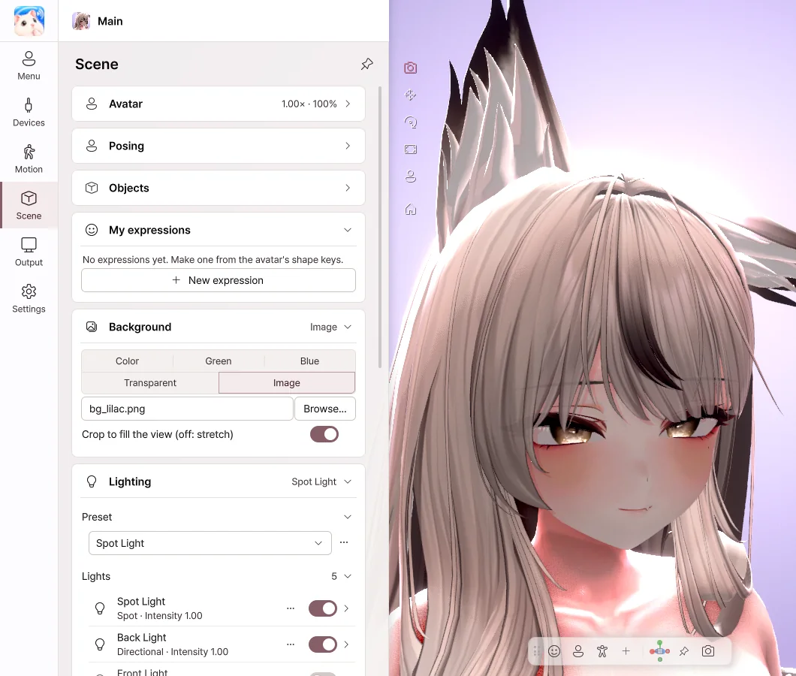
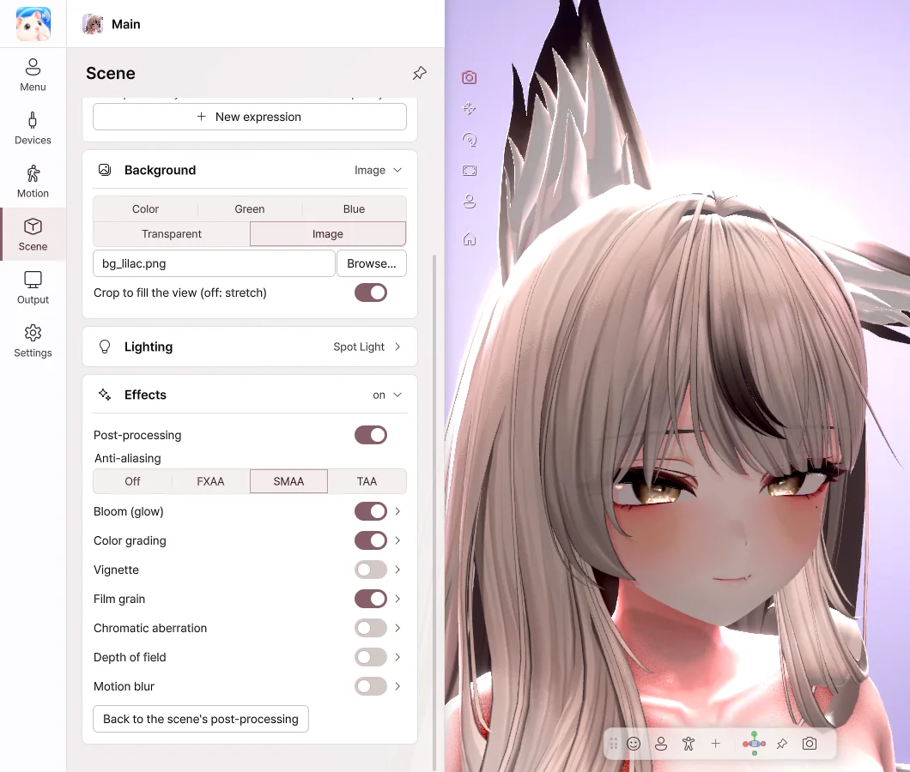

8. Scene
Choose the background, lighting and effects.
Lighting

- Choose a mood under Preset, and the lighting changes all at once.
- Turn each light on and off with its switch, and change its brightness and color.
- Use + Add light to add a face light or a rim light.
- Save lighting you like with ⋯ › Save as new….


Background
| Option | When to use it |
|---|---|
| Color | A background in the color you want |
| Green · Blue | When you remove it with a chroma key in your streaming software |
| Transparent | When you send it over Spout2 without a background |
| Image | When you use a picture as the background |


Effects

- Bloom — Bright areas glow softly.
- Color grading — Adjust brightness, contrast, saturation and color temperature.
- Depth of field — Blurs the background so the avatar stands out.
- Vignette · Film grain — Add atmosphere to the edges of the image and to its texture.
Shaders
The shaders on your avatar are shown as they are. We've confirmed this with major shaders such as Poiyomi and lilToon. AudioLink and mirror detection are not supported.